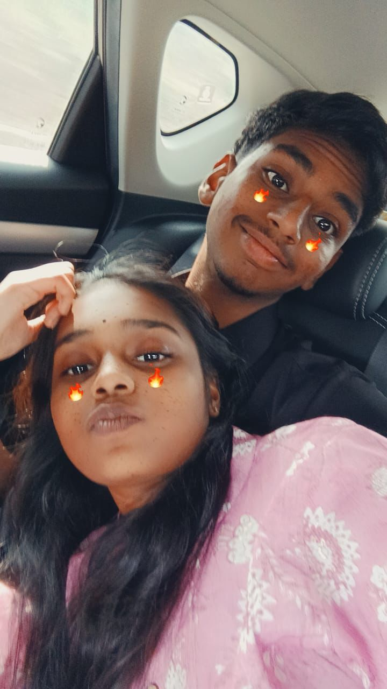
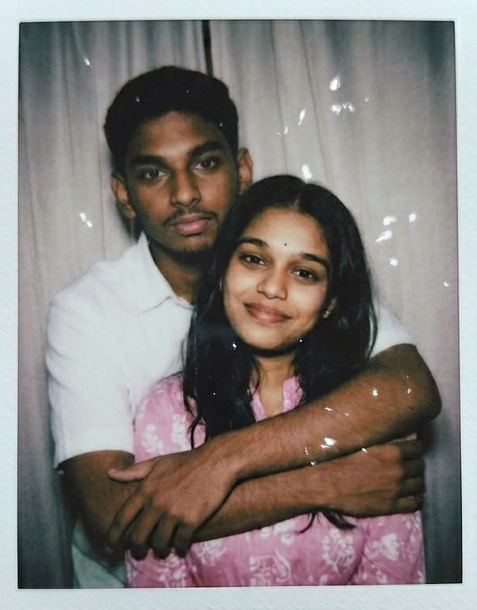
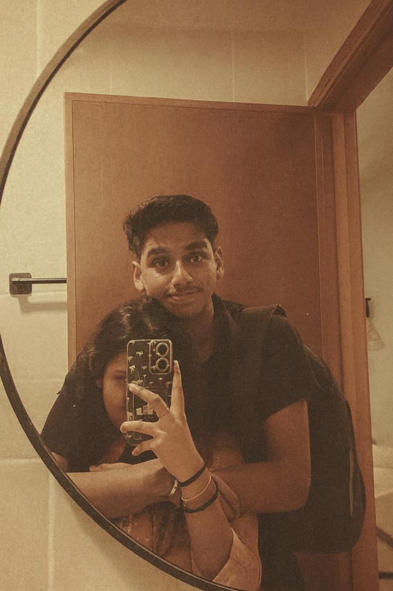
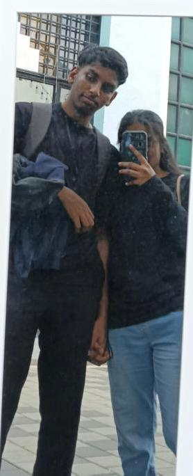
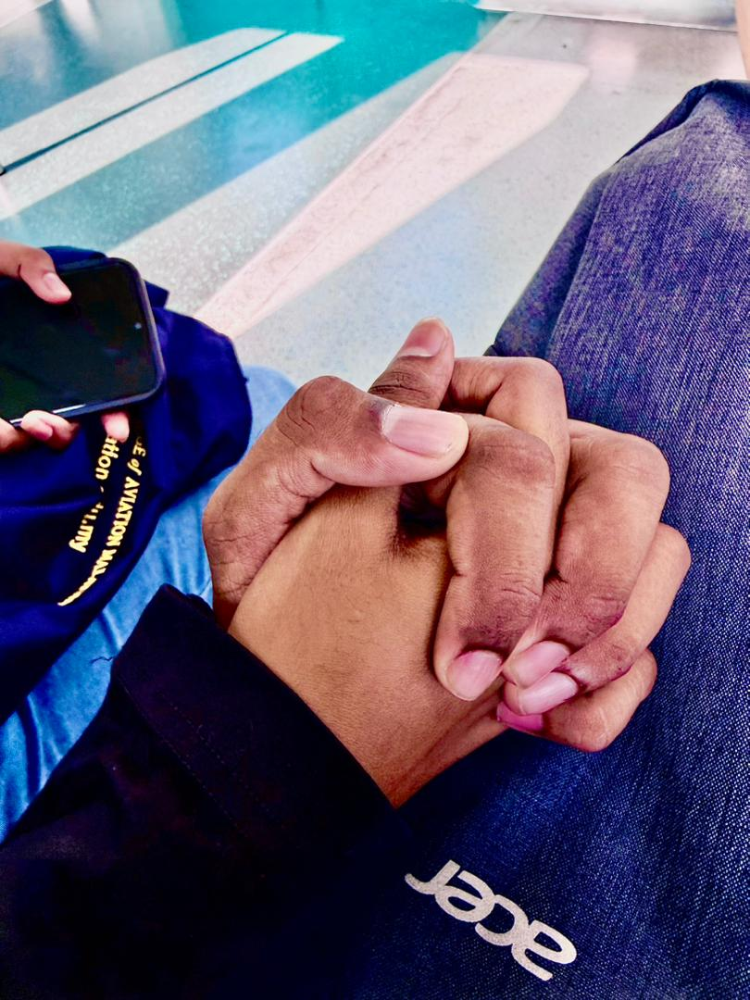

Month 1 • August 2025
The Beginning of Us
The month where everything started. From the first smiles to the first sweet memories, this was the start of Victor and Yashika’s beautiful story.
10 Months Scrapbook
Started on 3 August 2025
A visual timeline of our journey with photos, memories, little smiles, and all the moments that made us “us”.
Open Our Memories10 months scrapbook — a visual timeline of your journey with photos & memories.
“Ten months later, and my heart still smiles the same way it did in the beginning.”

The month where everything started. From the first smiles to the first sweet memories, this was the start of Victor and Yashika’s beautiful story.
More talks, more comfort, and more reasons to smile. Slowly, both hearts started feeling like home to each other.

A warm hug, a soft smile, and a memory that feels timeless. This month became one of the sweetest chapters.
Some memories do not need perfect focus to feel perfect. The love, care, and closeness are what make this page special.

Simple days, cute pictures, and the kind of memories that become favorites without even trying.

A new year began, but the feeling stayed beautiful. More dreams, more laughter, and more memories together.

A tiny moment, but a big feeling. Holding hands became a quiet promise to stay close through every day.
Love is not only serious moments. It is also laughing together, being silly, and enjoying every cute little thing.
Some moments feel better when they move. A little video memory for the scrapbook.
Ten months of smiles, comfort, care, and memories. This is not just a timeline — it is a love story.